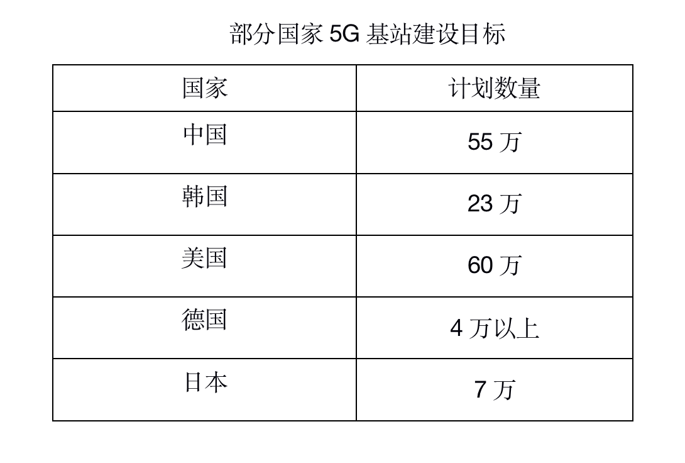

全球各国积极发展建设 5G，着重服务商业使用，在 5G 网络建设、5G 智能手机使用、5G 基站建设等方面还处于初步建设阶段，存在较大的发展空间。
据 GSA 统计，截至 2020 年 3 月底，全球 123 个国家的 381 个运营商宣布过它们正在投资建设 5G，且 40 个国家的 70 个运营商提供了一项或多项符合 3GPP 标准的 5G 服务。其中，有 63 个运营商发布了符合 3GPP 标准的 5G 移 动服务，有 34 个运营商发布了符合 3GPP 标准的 5G 固定无线接入或家用宽带服务。美国国防部认为，在 5G 领域，中国、韩国、美国和日本处于领先地位，英国、德国和法国位于第二梯队，新加坡、俄罗斯和加拿大处于第三梯队。
各国主要通过规划和进行频谱拍卖、简化监管流程、提供资金支 持、减免税收等方式推动 5G 发展。
典型国家发展5G的促进政策